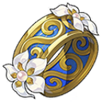
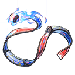
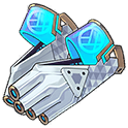

추천 광추
값을 매길 수 없는 건 희망뿐
치확 +16% · 4돌 추가 공격 강화
효과 자세히
전투 치피 120% 초과 20%p당 추가 공격 피해 +12%, 최대 4스택. 전투 시작·일반 공격 이후 필살기·추가 공격 방어력 무시 20% 2턴. 4돌 추가 공격을 활용.
오늘도 평화로운 하루
에너지 최대치 비례 피해 증가
효과 자세히
최대 에너지 1pt당 +0.4%, 최대 160pt.
천재들의 휴식
공격력 +32% · 처치 후 치피 +48%
효과 자세히
자신이 적을 처치하면 치피 버프 3턴.
동트기 전
치피 +36% · 추가 공격 +48%
효과 자세히
스킬·필살기 피해 +18%. 사용 후 몽신 획득 → 다음 추가 공격 피해 +48%.
느낌 있는 아침 식사 루틴
피해 +24% · 처치당 공격력 +8%
효과 자세히
공격력 최대 3스택 +24%.
추천 유물
망국을 애도하는 시인 4 · 뭇별 경기장 2
- 머리
 주옵션HP부옵션치명타 확률 · 치명타 피해 · 공격력% · 속도
주옵션HP부옵션치명타 확률 · 치명타 피해 · 공격력% · 속도 - 손

주옵션공격력부옵션치명타 확률 · 치명타 피해 · 공격력% · 속도 - 몸통
 주옵션치명타 확률 / 치명타 피해부옵션치명타 확률 (주옵션 제외) · 치명타 피해 (주옵션 제외) · 공격력% · 속도
주옵션치명타 확률 / 치명타 피해부옵션치명타 확률 (주옵션 제외) · 치명타 피해 (주옵션 제외) · 공격력% · 속도 - 다리
 주옵션공격력%부옵션치명타 확률 · 치명타 피해 · 속도
주옵션공격력%부옵션치명타 확률 · 치명타 피해 · 속도 - 구체
 주옵션양자 속성 피해 / 공격력%부옵션치명타 확률 · 치명타 피해 · 공격력% (주옵션 제외) · 속도
주옵션양자 속성 피해 / 공격력%부옵션치명타 확률 · 치명타 피해 · 공격력% (주옵션 제외) · 속도 - 매듭

주옵션공격력%부옵션치명타 확률 · 치명타 피해 · 속도
이 조합을 추천하는 이유
시인 착용 후 전투 전 속도 110/95 미만 → 치확 +20%/+32%. 뭇별 치확 70% → 일반 공격 강화.
별처럼 빛나는 천재 4 · 텐고쿠@라이브스트리밍 2
- 머리
 주옵션HP부옵션치명타 확률 · 치명타 피해 · 속도 · 공격력%
주옵션HP부옵션치명타 확률 · 치명타 피해 · 속도 · 공격력% - 손

주옵션공격력부옵션치명타 확률 · 치명타 피해 · 속도 · 공격력% - 몸통
 주옵션치명타 확률 / 치명타 피해부옵션치명타 확률 (주옵션 제외) · 치명타 피해 (주옵션 제외) · 속도 · 공격력%
주옵션치명타 확률 / 치명타 피해부옵션치명타 확률 (주옵션 제외) · 치명타 피해 (주옵션 제외) · 속도 · 공격력% - 다리
 주옵션속도 / 공격력%부옵션치명타 확률 · 치명타 피해 · 속도 (주옵션 제외) · 공격력% (주옵션 제외)
주옵션속도 / 공격력%부옵션치명타 확률 · 치명타 피해 · 속도 (주옵션 제외) · 공격력% (주옵션 제외) - 구체 주옵션양자 속성 피해 / 공격력%부옵션치명타 확률 · 치명타 피해 · 속도 · 공격력% (주옵션 제외)
- 매듭
 주옵션공격력%부옵션치명타 확률 · 치명타 피해 · 속도
주옵션공격력%부옵션치명타 확률 · 치명타 피해 · 속도
이 조합을 추천하는 이유
천재 양자 약점 적 방어력 무시 20%. 텐고쿠 한 턴 SP 3pt 이상 → 치피 +32% 추가.
별처럼 빛나는 천재 4 · 뭇별 경기장 2
- 머리
주옵션HP부옵션치명타 확률 · 치명타 피해 · 속도 · 공격력%
- 손 주옵션공격력부옵션치명타 확률 · 치명타 피해 · 속도 · 공격력%
- 몸통
주옵션치명타 확률 / 치명타 피해부옵션치명타 확률 (주옵션 제외) · 치명타 피해 (주옵션 제외) · 속도 · 공격력%
- 다리
주옵션속도 / 공격력%부옵션치명타 확률 · 치명타 피해 · 속도 (주옵션 제외) · 공격력% (주옵션 제외)
- 구체
주옵션양자 속성 피해 / 공격력%부옵션치명타 확률 · 치명타 피해 · 속도 · 공격력% (주옵션 제외)
- 매듭 주옵션공격력%부옵션치명타 확률 · 치명타 피해 · 속도
이 조합을 추천하는 이유
천재 4세트는 양자 약점 적의 방어력을 20% 무시하고, 뭇별은 치명타 확률 70%에서 일반 공격·전투 스킬 피해를 강화합니다.
이 정도면 잘 키웠다
선택한 세팅 기준 · —는 확인된 수치 없음
- 속도 전투 전
- 시인 치확 적용 전
시인 4세트의 전투 전 속도 조건을 맞춥니다.
| 스탯 | 추천 스탯 | 준종결 | 종결 |
|---|---|---|---|
| 공격력 | 3000 | — | — |
| 속도 | 95 미만[1]전투 진입 전. | — | — |
| 치명타 확률 | 68%[2]시인 치명타 확률 +32% 발동 전. | — | — |
| 치명타 피해 | 200% | — | — |
세팅 기준·출처
공개 가이드에서 이 세팅의 준종결 또는 종결 수치를 확인하지 못했습니다.
양자 약점과 한 턴의 스킬 포인트 소비를 활용합니다.
| 스탯 | 추천 스탯 | 준종결 | 종결 |
|---|---|---|---|
| 공격력 | 3000 | — | — |
| 치명타 확률 | 100% | — | — |
| 치명타 피해 | 150% | — | — |
세팅 기준·출처
공개 가이드에서 이 세팅의 준종결 또는 종결 수치를 확인하지 못했습니다.
성혼과 추천 돌파
4돌 스킬 후 추가 공격 확률 · 6돌 강화 일반 공격 후 포인트 환급.
1필살기 피해 +10%
용감무쌍 물고기
2패 뽑을 때 에너지 +1pt
놀이판은 숙면 도우미
3필살기·특성 +2
필살기·특성 레벨 상한 각각 15.
4전투 스킬 후 고정 확률 24%로 추가 공격 상태추천
불구인 중 일반 공격을 쓰면 같은 피해의 추가 공격 1회.
5전투 스킬 +2 · 일반 공격 +1
스킬·일반 공격 레벨 상한 각각 15·10.
6강화 일반 공격 후 SP +1pt추천
승리를 위한 기다림
추천 파티


기본 운영과 행적
포인트를 모아 같은 패 4장 만들기
동료 일반 공격으로 SP 확보 → 청작 스킬로 패와 피해 증가 중첩 → 강화 일반 공격.
- 필살기로 같은 패 4장을 얻어 수급이 막힌 턴 보완. 비교용 보스에서 4돌 추가 공격은 확률 변수.
행적 육성 순서
일반 공격 → 전투 스킬·특성 → 필살기
아하 속도 계산기 →기준과 출처 · 2026-11-27
4.7 데이터 · Prydwen 장비 참고 · 자료실 편성 예시